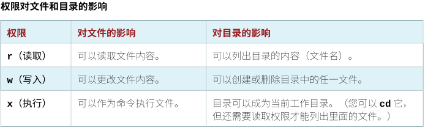

第七章 控制对文件的访问
目标：
- 设置文件的Linux文件系统权限，并解释不同权限设置的安全效果。
章节：
- 解释Linux文件系统权限
- 从命令行管理文件系统权限
- 管理默认权限与文件访问
第一节：解释Linux文件系统权限
目标：
- 完成本节后，学生应该能列出文件或目录的文件系统权限，并解释这些权限
对用户和组访问的影响。
Linux文件系统权限：
- 文件权限控制对文件的访问。
- Linux可以针对文件所属用户、所属组和其他用户设置不同的权限。
- 权限具有优先级，user权限覆盖group权限，后者覆盖other权限。
- 三种权限类别：读取（r）、写入（w）、执行（x）。

- 用户通常对目录具有r和x权限，可以进入目录并列出文件。
- 如果对目录只有r权限，则只能列出目录中文件名称，无法获得属性。
- 对于文件所在的目录，拥有其所有权或写入权限的任何用户都可以删除此文件，不论此
文件本身的所有权或权限如何（包括root用户创建的文件）。

* 注意：子目录的权限取决于父目录权限，若父目录对于用户无可读权限，子目录即使可读也无法访问。
查看文件与目录权限与所有权：
- ls -l命令显示文件的权限和所有权，-d选项显示所属目录的权限和所有权信息。


- 第一位：文件类型
- ：普通文件
d：目录
l：软链接
b：块设备
c：字符设备（鼠标或键盘）
s：socket文件
- 后九位：文件权限
1. 分三组，每组三个字符。
2. 每组分别对应所属用户、所属组、其他用户权限。
3. 权限表示为：r、w、x、-。
- 第十位（. or +）：SELinux标签是否启用、ACL是否启用。

练习 P211：INTERPRETING LINUX FILE SYSTEM PERMISSIONS
第二节：从命令行管理文件系统权限
目标：
- 完成本节后，学生应该能使用命令行工具更改文件的权限与所有权。
更改文件与目录的权限：
- chmod（change mode）命令用于修改文件权限，可使用符号法或数值法来设置权限。
使用符号法更改权限：symbolic method
- 命令语法如下所示：

1. Who：u、g、o、a（代表用户、组、其他、全部用户）
2. What：+、-、=（代表添加、删除、精确设置）
3. Which：r、w、x或X（代表读取、写入、执行）
- 对目录设置执行权限需使用大写的X
- 仅当为目录或者已为用户、组或其他用户设置了执行权限时，使用大写的X作为添加执行权限。
- 若使用小写的x，将为所有文件或目录添加执行权限。

使用数值法更改权限：numeric method
- 命令语法如下所示：###代表每一位数字

- 每个数字代表一个访问级别的权限：user、group、other。
- 数字的计算方法：将每个权限的数值加在一起，其中4代表读取，2代表写入，1代表执行。
- 数值法中的每个数字是一个八进制位（octal bit）。
- 有经验的管理员通常使用数值权限，因为它们的输入比较短，而仍能完全控制所有权限。


更改文件与目录的用户或组所有权：
- 新文件由创建该文件的用户所有。
- 只有root用户可以更改拥有文件的用户，组所有权可以由root用户或文件的所有者来设置。
- root用户可将文件所有权授予任何组，而普通用户仅可将文件所有权授予他们所属的组。
- 使用chown（change owner）命令可更改文件所有权，-R选项递归更改。


- 使用冒号（:）分隔用户名与组名

- $ chgrp <groupname> <filename>：更改文件的所有组
* 注意：
1. 也可使用句号（.）分隔用户名与组名，如下所示：

2. 但不推荐使用，原因如下：
3. 由于在用户名中可以使用句号（.），如系统中存在enoch.root用户、enoch用户与
root组，本意是更改文件的所有者为enoch用户，但使用该语法后文件的所有者更改
为enoch.root用户，给权限管理造成困扰。
练习 P219：MANAGING FILE SYSTEM PERMISSIONS FROM THE COMMAND LINE
第三节：管理默认权限与文件访问
目标：
- 完成本节后，学生应该能：
- 控制由用户创建的新文件的用户权限
- 解释特殊权限的影响
- 使用特殊权限和默认权限设置在特定目录中创建的文件的组所有者
特殊权限：
- 特殊权限构成了除了基本用户、组和其他类型之外的第四种权限类型。
- 顾名思义，这些权限提供了额外的访问相关功能，超出了基本权限类型允许的范畴。
- sticky bit（sbit）：粘滞位

- 特殊权限示例：
1. suid与sgid对文件的影响：
$ ls -l /usr/bin | egrep "wsr|-sr|ws-|-s-"：查看相关的suid与sgid文件

2. sgid对目录中创建的文件的影响：所有组继承

3. 粘滞位示例：
a. 具有粘滞位权限的目录中只有文件的所有者才能删除文件！

b. 不具有粘滞位权限的目录其他用户可删除另一用户的文件

c. 区别：粘滞位权限报错不同于普通权限报错

设置特殊权限：
- 用符号法表示：setuid = u+s、setgid = g+s、sticky = o+t
- 用数值法表示（第四位）：setuid = 4、setgid = 2、sticky = 1


默认文件权限：
- 创建新文件或目录时，会为其分配初始权限。
- 影响初始权限的两个因素：
1. 首先是创建常规文件还是目录
a. 创建新目录：操作系统会为其分配权限 0777（drwxrwxrwx）。
b. 创建新文件：操作系统则为其分配权限 0666（-rw-rw-rw-）。
2. 其次是当前用户的umask
a. shell会话根据当前用户设置一个umask，进一步限制初始设置的权限。
b. umask值是一个八进制位掩码，用于清除由该进程创建的新文件和目录的权限。
c. 如，umask 0002 可清除其他用户的写入位。
计算方法：创建文件 0666（0 0110 0110 0110），umask 0002（0 0000 0000 0010），
两者相减得 0664（0 0110 0110 0100），即文件的默认权限为 -rw-rw-r--。
d. 前导零表示特殊的用户和组权限未被清除
- 默认umask掩码值：002（UID >= 200）、022（0 <= UID <= 199）
- 可根据需要自定义调整umask值：
1. 命令行方式调整umask值：


2. 通过配置文件调整umask值：/etc/profile.d/*（推荐！）

练习 P227：MANAGING DEFAULT PERMISSIONS AND FILE ACCESS
Lab P232：CONTROLLING ACCESS TO FILES